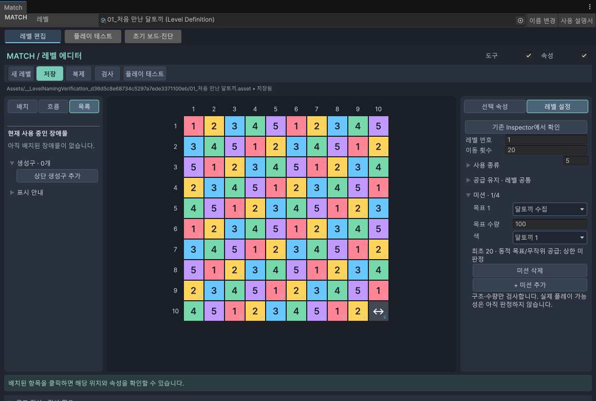

06 · 클리어 조건
레벨 조건과 미션
얼마나 움직일 수 있고, 무엇을 얼마나 모을지 정합니다.
시작 전에 오른쪽의 레벨 설정 탭을 누릅니다.
기본 조건
| 메뉴 | 입력할 내용 |
|---|---|
| 레벨 번호 | 이 레벨의 실제 번호입니다. 다른 레벨과 겹치지 않게 정합니다. |
| 이동 횟수 | 플레이어에게 줄 이동 수입니다. |
| 사용 종류 | 이 레벨에서 사용할 달토끼 색 종류입니다. |
| 기존 Inspector에서 확인 | Unity 기본 속성 창에서 원본 데이터를 살펴봅니다. 보통은 전용 화면에서 편집하세요. |
숫자를 입력한 뒤 Enter를 누르거나 다른 곳을 눌러 확정합니다.

미션 추가하기
- 오른쪽 레벨 설정에서 미션을 펼칩니다.
- 미션 추가 버튼으로 목표를 넣습니다.
- 목표 종류를 고르고, 해당하는 색과 목표 수량을 입력합니다.
- 보드와 공급 목록에 그 목표를 해결할 요소가 충분한지 확인합니다.
- 검사 후 플레이 테스트로 직접 확인합니다.
한 레벨에는 미션을 1~4개 정할 수 있습니다.
| 종류 | 목표 |
|---|---|
| 달토끼 수집 | 정한 색의 달토끼를 모읍니다. |
| 나무상자 / 거미줄 / 고철 / 먼지 제거 | 해당 종류를 없앱니다. |
| 금고 / 자물쇠 / 폐가전 제거 | 해당 장애물을 없앱니다. |
| 곰팡이 전부 제거 | 보드의 곰팡이를 모두 없앱니다. 퍼지면 남은 수량도 달라집니다. |
| 부품 회수 | 회수 부품을 도착 바닥까지 보냅니다. |
공급 유지 설정
| 항목 | 뜻 |
|---|---|
| 고철 유지 | 보드에 유지할 고철 수량의 목표 |
| 추가 한도 | 새로 더 만들 수 있는 고철의 총 한도 |
| 고철 내구도 | 새로 공급되는 고철의 내구도 |
| 부품 유지 | 보드에 유지할 회수 부품 수량의 목표 |
실제 공급 위치와 방식은 생성구 설정에서 함께 정해야 합니다.
목표 수량이 너무 많은지 확인하기
미션 아래의 수량 안내와 검사 결과를 확인하세요. 처음 놓인 수량과 추가 공급 가능한 수량이 목표를 채우는 데 도움이 되는지 살펴봅니다.
변경 이력
2026-10-08 · 추가 · 튜토리얼 메뉴 · 일반 매뉴얼의 공통 목차에 튜토리얼 진입 항목을 추가하여 다른 안내를 읽은 뒤에도 돌아갈 수 있게 했습니다. Windows / Chrome · 메뉴 왕복 이동 확인.
| 변경일 | 변경 항목 | 이전 → 현재 | 이유 |
|---|---|---|---|
| 2026.09.28 | 모양 목록 | 추천 → 등록형 목록 안내 추가 | 사용자 등록 방식 반영 |
| 2026.09.28 | 맵 모양 추천 안내 | 추가 · 왼쪽 목차에 추천 안내 연결 | 추천과 ! 도움말 사용법 안내 |
| 2026.09.28 | 이 페이지 전체 | 추가 · 처음 작성 | 현재 Match 도구를 쉽게 설명 |
설명 편집일: 2026.09.28 · 대상: Windows / Unity 6000.3.10f1
검증 상태: 메뉴·절차 코드 대조, 실제 화면 캡처. 확인 범위 보기